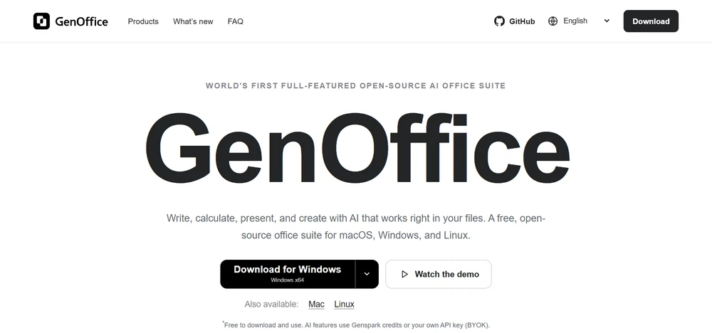
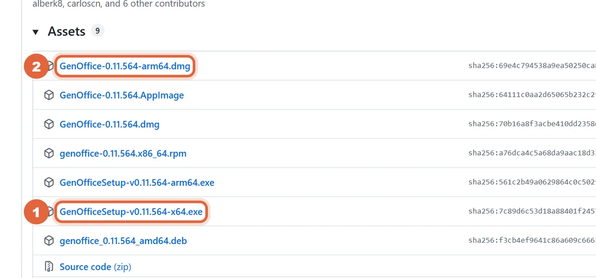
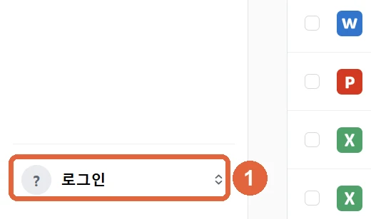
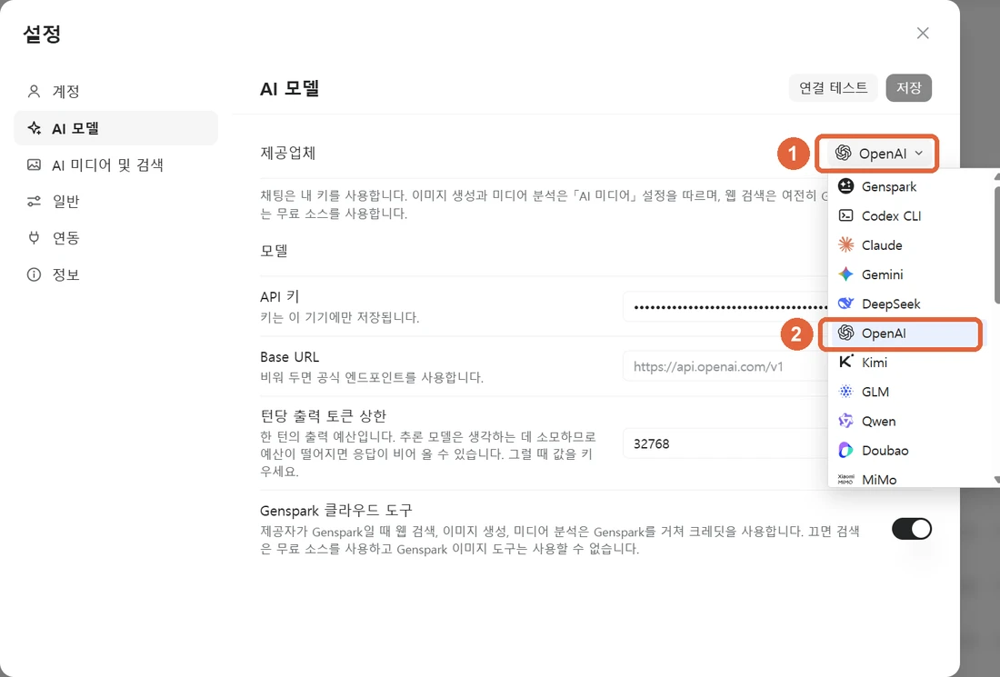
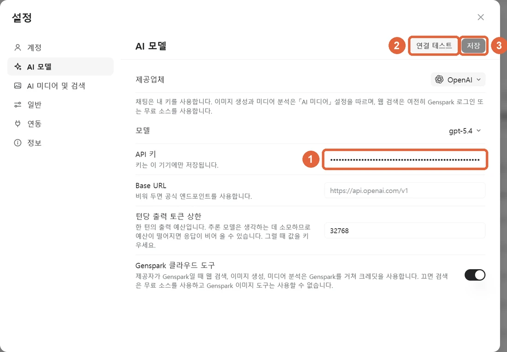
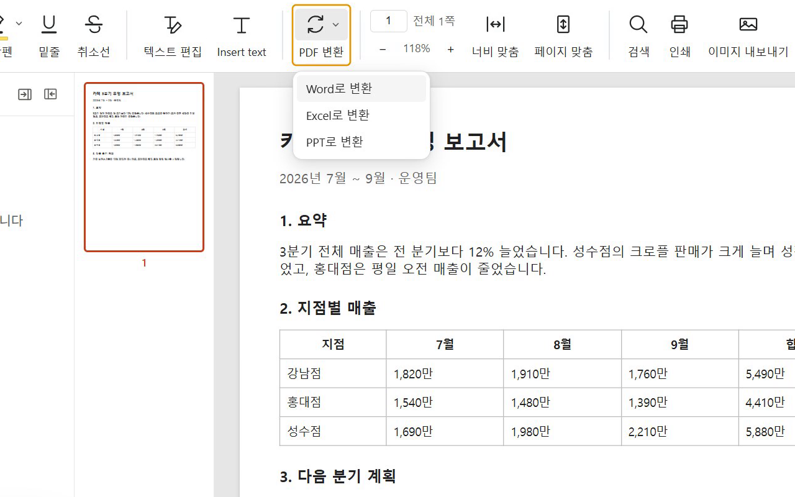
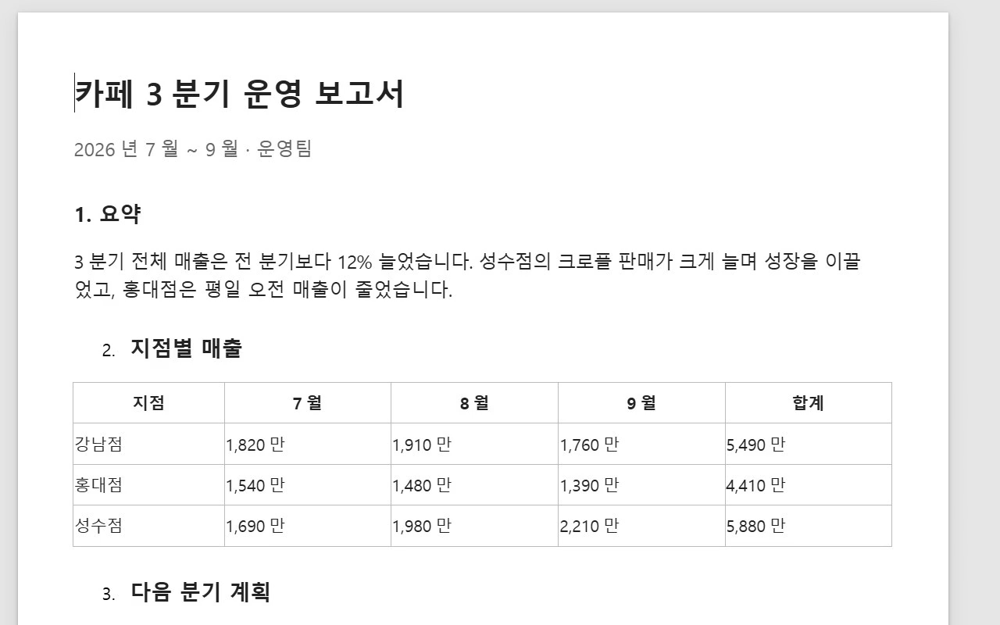
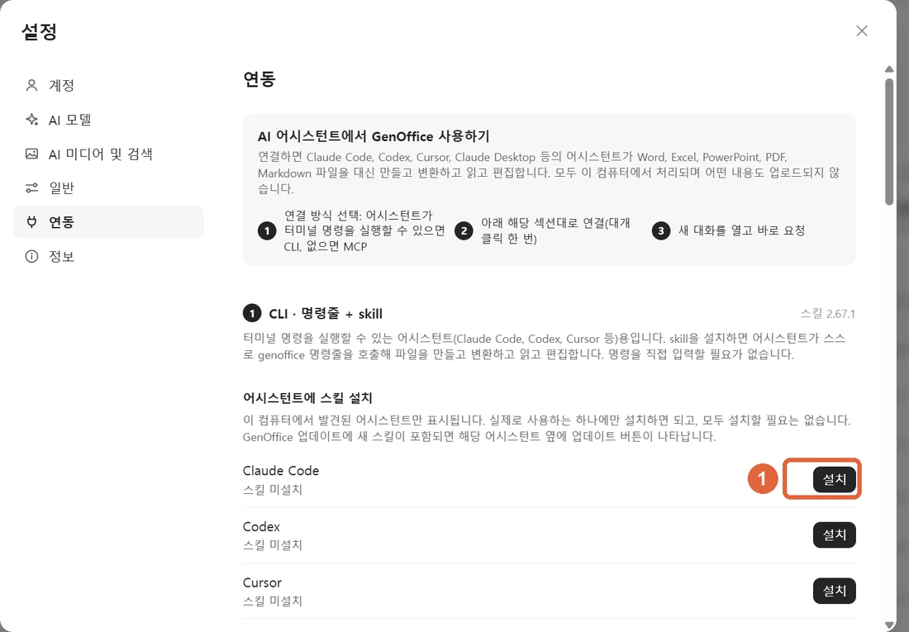

MS 오피스 대신 쓸 수 있는 무료 오픈소스 오피스예요. 워드·엑셀·PPT·PDF를 원래 형식 그대로 열고 저장하고, 문서 옆 AI 창에 말로 시키면 표·차트·발표 자료를 만들어 줘요.
genoffice.ai에서 'Download for Windows'를 누르거나, 깃허브 Releases의 Assets에서 윈도우는 GenOfficeSetup-…-x64.exe, 맥(M 칩)은 …-arm64.dmg를 받아 실행하세요. 처음 뜨는 안내 창은 '건너뛰기'를 눌러도 돼요.


왼쪽 아래 '로그인'을 누르면 설정이 열려요. AI 모델 → 제공업체에서 키가 있는 회사를 고르고, API 키 칸에 붙여 넣은 뒤 '연결 테스트' → '저장'을 누르세요. 키는 이 PC에만 저장돼요. 젠스파크 계정이 있으면 '계정'에서 로그인만 해도 돼요.



엑셀 파일을 열고 왼쪽 AI 창에 아래 '엑셀' 문장을 넣으세요. 원래 시트 오른쪽에 요약 표와 차트가 생겨요. 마음에 안 들면 Ctrl+Z로 되돌려요. 저장은 Ctrl+S.
홈에서 'AI Slides'를 누르고 아래 'PPT' 문장을 넣으세요. 청중·분위기 같은 질문이 나오면 고르거나 '알아서 결정'을 누르면 돼요. 장마다 사진까지 넣어 만들어요(6장에 몇 분 걸려요).
회사에서 받은 .docx를 그대로 열고 AI 창에 고칠 내용을 말하세요. 아래 '변경 내용 추적'을 켜면 원문을 남긴 채 고친 곳을 표시해요.
PDF를 열고 위쪽 'PDF 변환' → 'Word로 변환'을 누른 뒤 저장할 곳을 고르세요. 표와 제목이 살아 있는 워드 파일이 생겨요. 변환은 내 PC 안에서 돼요.


설정 → 연동에서 Claude Code 옆 '설치'를 누르면, 클로드 코드에게 '이 엑셀로 보고서 워드 만들어 줘'처럼 시켜서 실제 오피스 파일을 만들 수 있어요. 명령어로 하려면 아래 '클로드 코드 연결' 줄을 쓰세요.

공식 사이트 · 깃허브
https://genoffice.ai https://github.com/genspark-ai/genoffice/releases/latest
영상에서 넣은 문장
지점별·메뉴별 매출 합계를 요약 표로 만들고, 지점별 매출 막대 차트도 넣어 줘
영상에서 넣은 문장
카페 가을 신메뉴 3종(밤 라떼, 고구마 크림 라떼, 무화과 케이크) 출시 발표 자료 6장 만들어 줘
영상에서 넣은 문장
이 공지를 손님에게 보낼 친근한 말투로 전체를 고쳐 쓰고, 신메뉴와 가격은 표로 바꿔 줘
명령 프롬프트에 한 줄 (설정 → 연동의 '설치'와 같음)
"%LOCALAPPDATA%\Programs\GenOffice\resources\cli\genoffice.cmd" skill install claude-code
도움이 되셨다면
@ai.antenna.kr
에서 바로 쓰는 AI 활용법을 계속 올립니다.